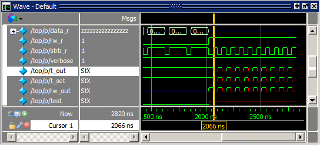
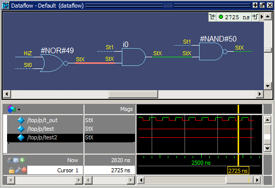

Tracing an X (Unknown)
Procedure
- View
t_out in the Wave and Dataflow windows.
- Scroll
in the Wave window until you can see /top/p/t_out.
t_out goes to an unknown state, StX, at 2066 ns and continues transitioning between 1 and unknown for the rest of the run (Figure 1). The red color of the waveform indicates an unknown value.
Figure 1. A Signal with Unknown Values - Double-click
the t_out waveform at the last transition of signal t_out at 2785
ns.
Once again, the source code view is opened and indicates the t_out signal.
Double-clicking the waveform in the Wave window also automatically opens a Dataflow window and displays t_out, its associated process, and its waveform.
- Click
the Dataflow tab to make the Dataflow window active.
Since the Wave Viewer was open when you last closed the window, it opens again inside the Dataflow window with the t_out signal highlighted (Figure 2).
Figure 2. Dataflow Window with Wave Viewer
- Position the cursor at a time when t_out is unknown (for example, 2728 ns).
- Scroll
in the Wave window until you can see /top/p/t_out.
- Trace
the unknown.
- In the Dataflow Viewer, click the highlighted signal to make the Viewer active. (A black frame appears around the Dataflow Viewer when it is active. The signal will be orange when selected.)
- Select from
the menus.
The design expands to show the source of the unknown state for t_out (Figure 3). In this case there is a HiZ value (U in the VHDL version) on input signal test_in and a St0 on input signal _rw (bar_rw in the VHDL version). This causes the test2 output signal to resolve to an unknown state (StX). The unknown state propagates through the design to t_out (Figure 3).
Figure 3. ChaseX Identifies Cause of Unknown on t_out
- Clear
the Dataflow window before continuing.
- Click the Delete All icon to clear the Dataflow Viewer.
- Click the Show Wave icon to close the Wave view of the Dataflow window.